Effects of recreational marijuana on Aotearoa
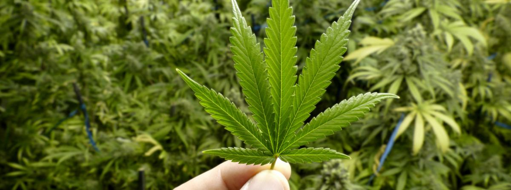
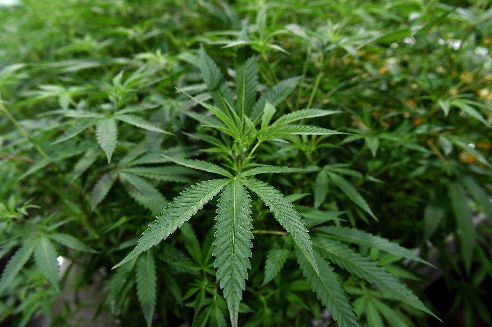
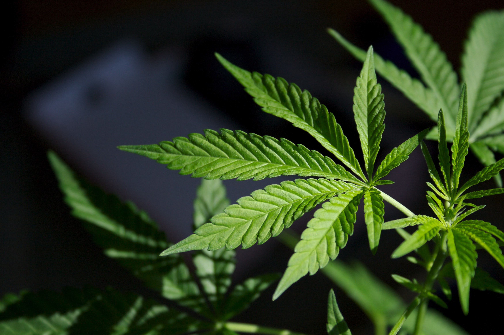
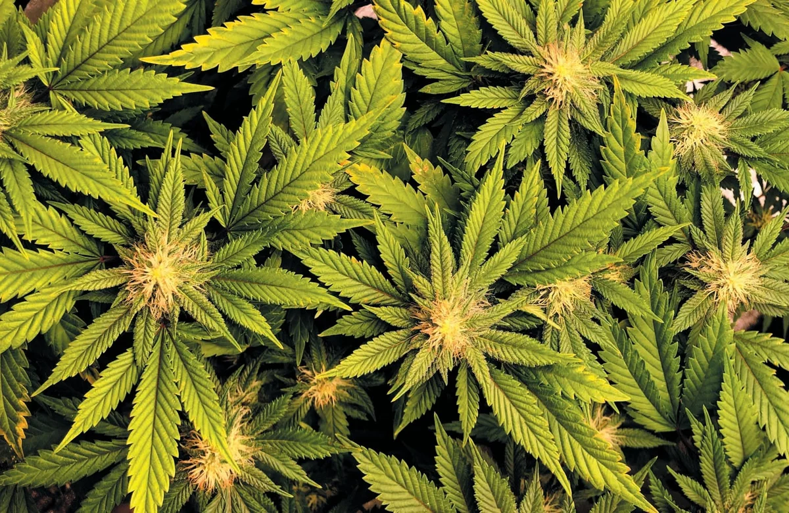
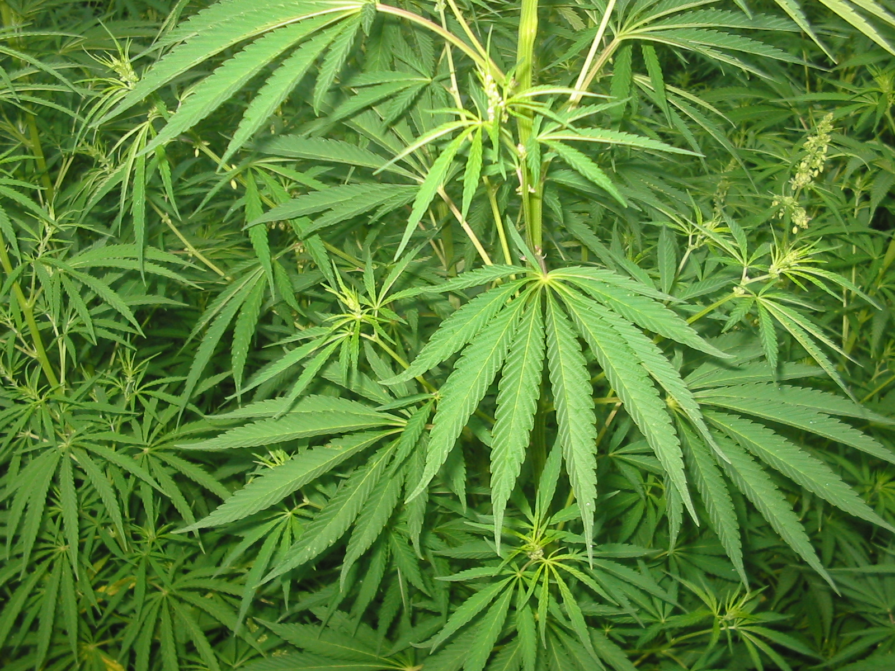
Unfortunately, in the country of Aotearoa, the use of recreational marijuana has
recently become a major trend amongst young people. As more and more people
become attracted to recreational marijuana from their peers, this introduces new
devastating consequences for our current generation and the future generation to
come. New problems arising for New Zealand include more addictions (once
addicted, it is very hard to stop), more health problems (cancer, heart attack,
mental health...), more relationship problems, more careless and reckless
behaviour, and more premature deaths both from physical health problems and
dangerous behvaiour (i.e. car accidents). It would be very sad and a waste to see our
sophisticated and developed nation getting ruined by these harmful substances.
We need to save ourselves by banning recreational marijuana, raising awareness of
what we are doing to ourselves, avoiding peer pressure to take recreational
marijuana, quitting recreational marijuana (for those who have already started
taking marijuana before they become addicted), and go to helpline/treatment
programmes (for those who are already addicted and struggling to stop).
List of issues:
-
Dangerous driving/car-crashes
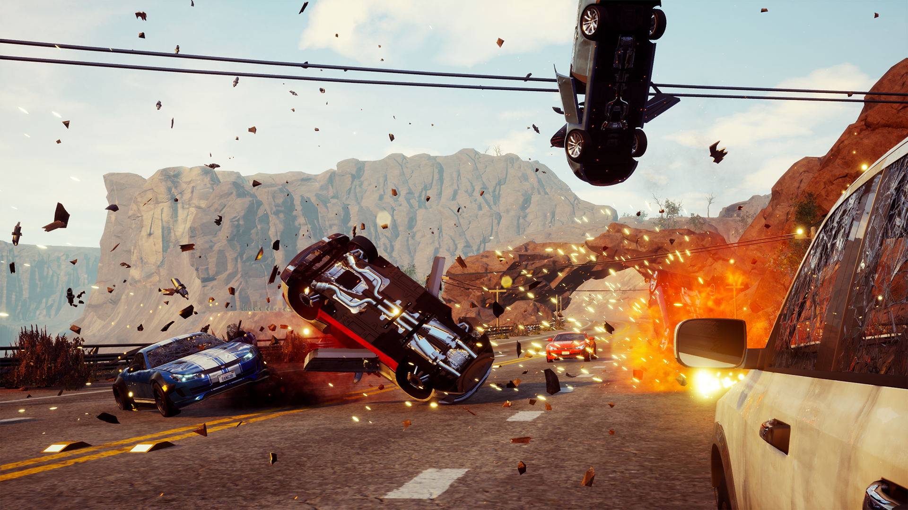
From past records, alcohol and drugs have been known to cause 40% of fatal crashes
(with 13% alcohol alone, 9% alcohol and drugs, and 18% drugs alone). Most of this proportion
came from 20- to 24-year-old young adults (with 60% of all fatal crashes involving alcohol/drugs)
and 25- to 29-year-olds (65%). The statistics were so high to the point where the
NZTA (New Zealand Transport Agency) needed to make an ad not to smoke drugs (which was an expensive ad to
make that they wouldn’t make for no reason), which is shocking. If more and more young people become addicted
to recreational marijuana and pass down the trend to the next generation, then there is a very high chance that
we will be witnessing more fatal car crashes in the future of our country.
-
Physical and Mental Health Problems
Cancer
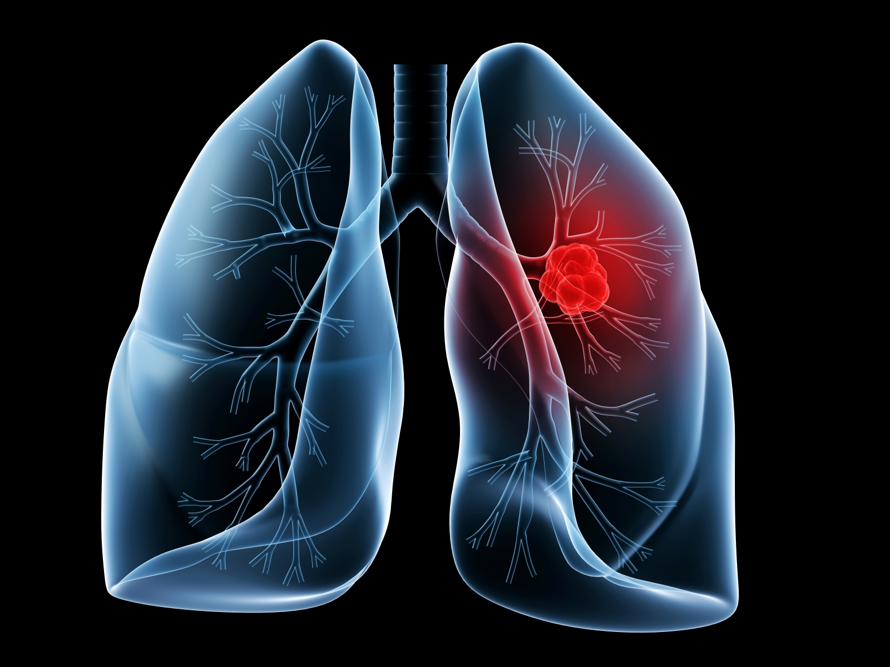
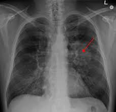
Recreational Marijuana has been known to damage the lungs and cause cancer just like tobacco cigarettes
due to them both containing the same cancer-causing carcinogens. Contrary to popular belief that recreational
marijuana is less harmful than tobacco cigarettes, a New Zealand study has shown that smoking marijuana is 5
times more harmful to the respiratory system than a cigarette would. If not from dangerous driving, we will
also witness higher mortality rates from cancer in the future of our country with our current trend.
Depletion of mineral body storage
 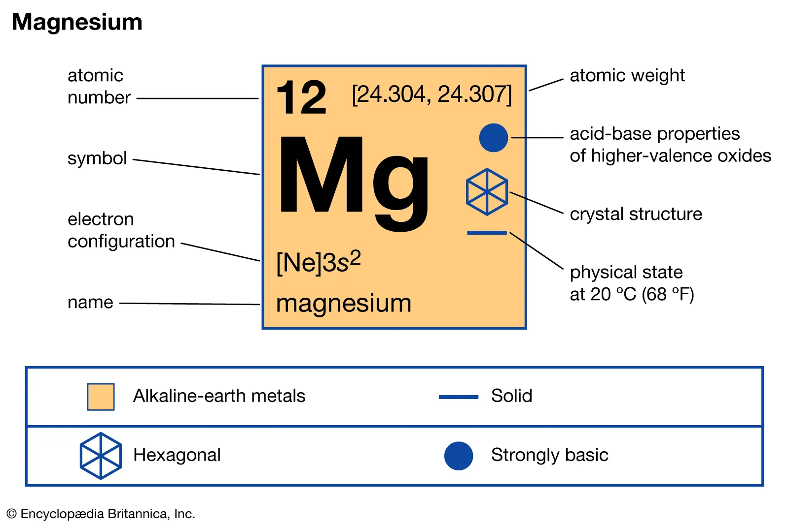
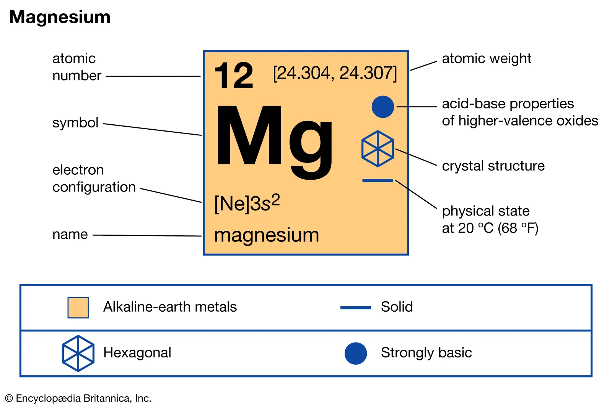

Additionally, marijuana also destroys the body natural reserves. The human body is naturally responsive
to the dietary mineral magnesium (which acts as a “tranquilizer” as a nutrient that helps relaxes one and
relieves stress). By using marijuana, it depletes the stores of magnesium in the body, resulting in the
person feeling agitated when the euphoria wears down. Unsurprisingly, people normally reuse the drug to feel
good again, thereby making them become more and more physically and emotionally dependent on it.
Mental health problems
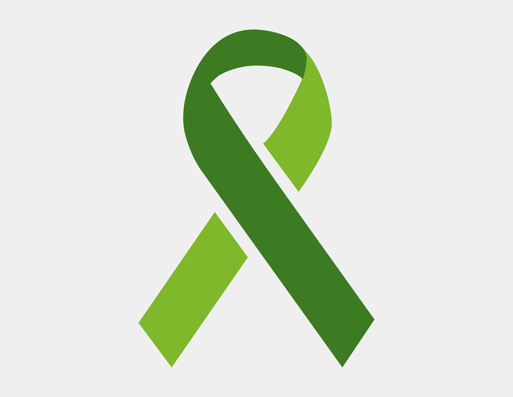
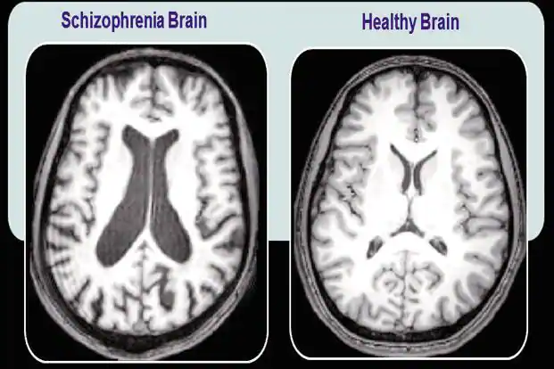
During a psychosis, one gets paranoid or loses understanding of reality, so they hear or see things that
are not there and can have long-lasting odd thoughts (psychosis lessens once euphoria disappears).
Although short-term, psychosis can also be a symptom of a long-term medical condition called “schizophrenia”.
Schizophrenia also affects one’s understanding of reality, but additionally it includes other symptoms, like trouble with
speech, the inability to focus and show emotions. Recent research suggests that for those who frequently use marijuana from
a young age for a long time, there is a risk of them developing these mental conditions. Young males, especially 16-25 years
old, could be at a higher risk. Once schizophrenia is developed, withdrawal from marijuana won’t solve it.
Mental health issues are already very common in today’s era and if the trend of taking recreational marijuana keeps going on
like this, then in the future, this country will be experiencing an even larger mental health crisis amongst young people.
-
Thought Distortion
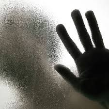
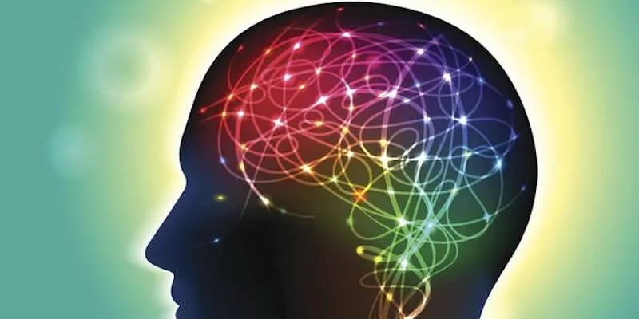
Recreational marijuana can also distort one’s thinking by clouding their senses and judgement. The effects depend on many different factors, including the marijuana’s potency,
how it was taken, and the past intake of it. Different effects include:
1. Strengthening one’s senses (making eyes and ears more sensitive)
2. Distort one’s sense of time
3. Jeopardise motor skills, or skills involving muscles for completing certain actions (which plays a part in making driving more dangerous)
4. Lower inhibition
Because recreational marijuana clouds a person’s senses and judgement, this can affect a person’s life in so many aspects (for example, dangerous/reckless behaviour (i.e. car accidents)
putting their lives and other people’s lives in danger, affecting their relationships with other people around them (i.e. the way they communicate with other people), affecting their work/academic performance, etc.). With these problems arising, if the recreational marijuana trend continues to live on to the next generation, then in the future, this could potentially be large enough to leave a very bad impression on our country and remove our country from the list of being one of the most-friendliest/happiest/peaceful countries in the world.
-
Surgery Complications:
Marijuana can also cause complications for those who have surgery. Complications include:
1. Having stomach contents coming into one’s throat
2. Having a heart attack
3. For those who need more anaesthesia, they are a greater risk of low blood pressure and a delayed wake-up post-surgery
4. Breathing issues
5. Complications post-surgery (including continuous pain and reliance on opioids)
Again, if we are going to see a future of too many young people taking recreational marijuana, then there will
be a higher chance of more hospital patients being recreational marijuana users themselves, which would mean
there will be a higher chance of more hospital patients experiencing surgery complications around the country.
Below is a diagram of how marijuana affects the heart:
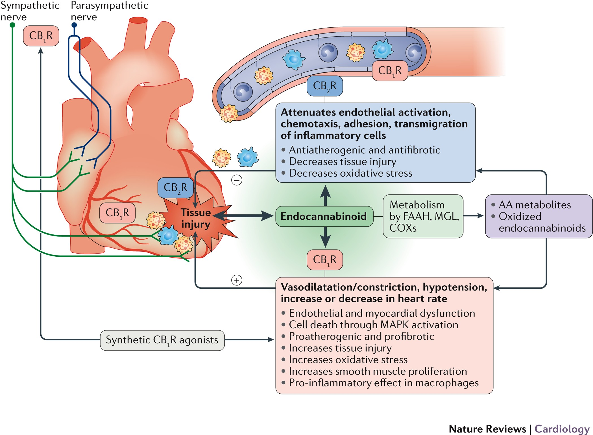
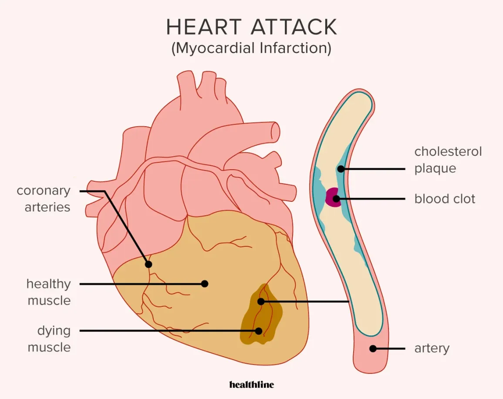


-
Addiction
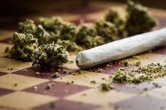
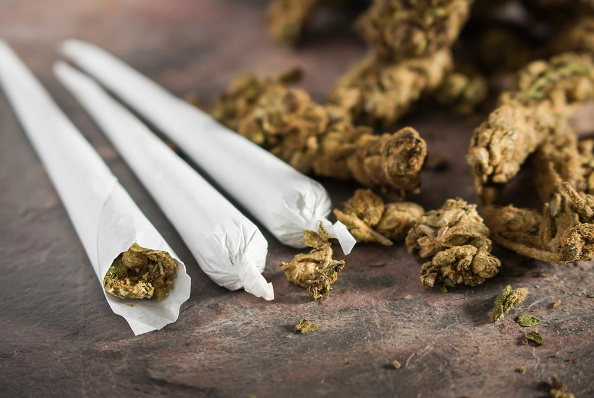
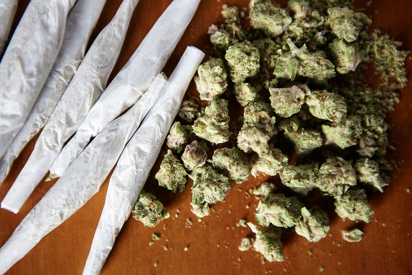
Another issue with recreational marijuana becoming a trend is the addiction. According to the CDC
(Centers for Disease Control and Prevention), 1 out of 10 people using marijuana will develop an addiction to
it or have cannabis-use disorder. Once a person becomes addicted to using marijuana, they can’t stop using it
even if it destroys their relationships, academics, career, health, or finances. Similar to chronic conditions
like schizophrenia, young people with heavy usage of marijuana are at a higher risk of developing cannabis-use
disorder. For example, the chances of addiction are 1 in 6 amongst teenagers or even ½ for those who use it
daily.
-
Second-hand smoking
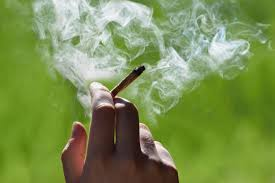
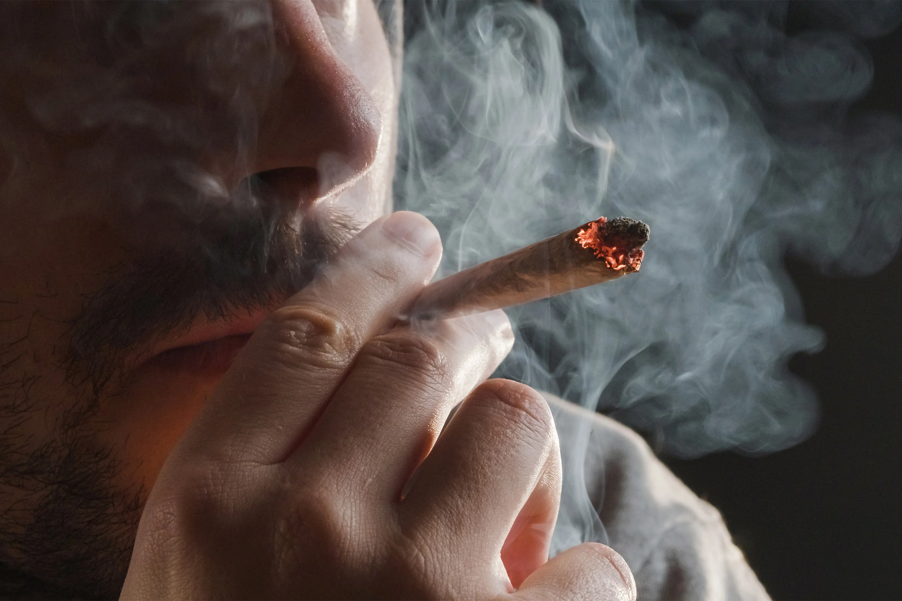
Another issue with too many young people taking recreational marijuana is the
second-hand smoking for the people around them (including bystanders). Even for
people who are not actually smoking marijuana, once they come into contact with
it, studies have shown that exposure to second-hand marijuana impairs blood
vessel function. Studies have been shown on rats that for those that have been
exposed to marijuana for half an hour, they have been having larger impairment of
blood vessel function than for those being exposed to cigarette smoking instead.
If the current generation doesn’t stop with this recreational marijuana trend,
then in the future, there will be more second-hand marijuana smoke prevalence out in
the streets around New Zealand, which means that more people (including non-marijuana users)
and even tourists will experience health problems as well from the second-hand smoke alone.
References
Addiction Rehab Toronto. (n.d.). Smoked marijuana joints [image]. https://addictionrehabtoronto.ca/addiction/marijuana-addiction/
Asthma and Allergy Foundation of America. (n.d.). Normal-vs-asthma-lung [image]. https://community.aafa.org/blog/what-happens-in-your-airways-when-you-have-asthma
Biosphere. (n.d.). Magnesium Defiency diagram [image]. https://www.biospherenutrition.co.nz/blogs/magnesium/signs-of-magnesium-deficiency
Britannia ProCON.ORG. (n.d.). Marijuana leaf [image]. https://marijuana.procon.org
British Journal of Child Health. (n.d.). Confused drawing [image]. https://www.google.com/search?q=psychosis&client=safari&sca_esv=7d7a298ed3e3445f&rls=en&udm=2&biw=1440&bih=820&ei=oblJZu-ACJTkseMPiuOugAY&ved=0ahUKEwiv1eulp5mGAxUUcmwGHYqxC2AQ4dUDCA8&uact=5&oq=psychosis&gs_lp=Egxnd3Mtd2l6LXNlcnAiCXBzeWNob3NpczIKEAAYgAQYQxiKBTIKEAAYgAQYQxiKBTIKEAAYgAQYQxiKBTIKEAAYgAQYQxiKBTIFEAAYgAQyBRAAGIAEMgUQABiABDIFEAAYgAQyBRAAGIAEMgUQABiABEirDVDMBFihDHABeACQAQCYAbkBoAGUC6oBAzAuOLgBA8gBAPgBAZgCCKACvAuoAgDCAggQABiABBixA5gDAZIHAzAuOKAHnyo&sclient=gws-wiz-serp#vhid=o6xCIuZZQhpEzM&vssid=mosaic
Cognitive Distortions: 22 Examples & Worksheets (&pdf). (n.d.). Neuron circuits [image]. https://positivepsychology.com/cognitive-distortions/
DifferenceBetween.net. (n.d.). Marijuana plants [image]. http://www.differencebetween.net/science/difference-between-cannabis-and-alcohol/
ehospice. (2019, June 4). Marijuana leaves [image]. https://ehospice.com/kenya_posts/medical-marijuana-dispelling-the-myths/
healthline. (n.d.). Heart attack diagram [image]. https://www.healthline.com/health/heart-attack#heart-attack-definition
Konstantinion Research Center. (n.d.). Lung Cancer Diagram [diagram]. https://www.konstantinioncenter.org/en/saturated-fat-may-increase-risk-of-lung-cancer/
Learnool. (2024, April 1). Magensium Chemical Forumla [diagram]. https://learnool.com/periodic-table/
Mayo Clinic. (n.d.). Enlarged heart [diagram]. https://www.mayoclinic.org/diseases-conditions/enlarged-heart/symptoms-causes/syc-20355436
Medium. (n.d.). Lung Cancer Stages [image]. https://medium.com/@topentise01/lung-cancer-50957abd9415
Medium. (n.d.). Marijuana [image]. https://newsleaksagency.medium.com/on-colos-what-it-means-side-effects-why-it-s-trending-in-nigeria-d1739d25e834
Mint. (2014, April 1). Schizophrenia Brain V. Healthy Brain [image]. https://www.livemint.com/Specials/jgAURoNbTXxWPfa5uJD4vI/The-mystery-of-schizophrenia.html
Nature Reviews Cardiology. (2017, September 14). Heart diagram [diagram]. https://lens.google.com/search?ep=gsbubb&hl=en-NZ&re=df&p=AbrfA8rHvKLH69qFq8SQE2d88sS8aYJ9xO5Tc_kO9O3scYSxgiFiYBL_j_cgkxfqnGKH1RYdgGDjac68bGa1wBJTsfv92o6mlhgUEYdRgjVbbQ3tt35AlBk1iyvCVIJ6S4PtHSRjD4uXSeMSj4c-5b0yLBMWLz0u3Fkl9ybwTNa_1CF3kHMNnwS21yAned5844U-kGr9FlCmJVp3Uw%3D%3D#lns=W251bGwsbnVsbCxudWxsLG51bGwsbnVsbCxudWxsLG51bGwsIkVrY0tKRFEyWXpnM01HUm1MV1U0TlRndE5HSTBNeTA0TTJRd0xXSXhNR0UwWmpNMVpXRXlPUklmVFhoaVEwaEpiVzAzWVZsVU9FZHRjM3A0VFdaRGJIVllNbkJvYUMxU1p3PT0iLG51bGwsbnVsbCxbW251bGwsbnVsbCwiMC0wIl0sWyIzZDlmZTc1ZS01NGMyLTRkODUtOTJlZS02ODA2YzNjOGJmNzIiXV1d
NewScientist. (2023, September 28). Cannabis smoke [image]. https://www.newscientist.com/article/2394293-cannabis-use-disorder-may-raise-the-risk-of-a-heart-attack-or-stroke/
PBS. (2023, September 2). Cannabis smoke [image]. https://www.pbs.org/newshour/health/many-people-think-cannabis-smoke-is-harmless-heres-how-how-that-belief-can-put-health-at-risk#
Physicians Premier. (2020, November 20). White Ribbon [image]. https://mdpremier.com/november-is-lung-cancer-awareness-month/
PhRMA. (2021, May 4). Green Ribbon [image]. https://phrma.org/Blog/reflecting-on-mental-health-awareness-month
Pinterest. (n.d.). Hexagon Spirals [image]. https://nz.pinterest.com/pin/papers--716635359431294941/
Rock Paper Shotgun. (2019, April 9). Ex Criterion developers launch dangerous driving today [image]. https://www.rockpapershotgun.com/ex-criterion-developers-launch-dangerous-driving-today
Scientific American. (2024, March 1). Marijuana plants [image]. https://www.scientificamerican.com/article/is-marijuana-bad-for-health-heres-what-we-know-so-far/
South China Morning Post. (2022, June 8). Marijuana plants [image]. https://www.scmp.com/news/asia/southeast-asia/article/3180804/thailand-decriminalises-cannabis-thursday-whats-going
Soundcloud. (2017, April 1). Thought Distortion [image]. https://soundcloud.com/bmjpodcasts/watching-the-world-through-a-clear-fog-recognising-depersonalisation-and-derealisation
Harvard Health Publishing. (2020, April 10). Medical marijuana [image]. https://www.health.harvard.edu/blog/medical-marijuana-2018011513085
Step Away Treatment Centre. (n.d.). Smoked marijuana joints [image]. https://www.stepaway.co.za/Addiction-Treatments/Marijuana-Addiction-Treatment
The Harvard Gazette. (2023, February 27). Person smoking marijuana [image]. https://news.harvard.edu/gazette/story/2023/02/surgical-patients-addicted-to-cannabis-face-greater-post-op-risks/
Wikipedia. (n.d.). Magnesium [image]. https://en.wikipedia.org/wiki/Magnesium
Wikipedia. (n.d.). Lung Cancer X-Ray [image]. https://en.wikipedia.org/wiki/Lung_cancer
Xbox. (n.d.). Dangerous Driving [image]. https://www.xbox.com/en-NZ/games/store/dangerous-driving/9NTDHC46672V
Case for change. (n.d.). ActionPoint. https://www.actionpoint.org.nz/drink_driving_case_for_change#:~:text=Between%202017%20and%202019%2C%20alcohol,29%20year%20olds%20(65%25).
Dhyana. (2024). 10 Reasons to Stay Away from Weed. Narconon. https://www.narconon.org/blog/marijuana-2/10-reasons-to-stay-away-from-weed/
Djones. (2024, January 17). Secondhand Marijuana Smoke fact Sheet - American Nonsmokers' Rights Foundation | No-Smoke.org. American Nonsmokers’ Rights Foundation | no-smoke.org. https://no-smoke.org/secondhand-marijuana-smoke-fact-sheet/#:~:text=Secondhand%20marijuana%20exposure%20impairs%20blood,impairment%20of%20blood%20vessel%20function.
Frysh, P. (2008, August 25). How pot affects your mind and body. WebMD. https://www.webmd.com/mental-health/addiction/marijuana-use-and-its-effects
Report: Drug use in Aotearoa 2022/23. (n.d.). NZ Drug Foundation. https://drugfoundation.org.nz/articles/report-drug-use-in-aotearoa-202223#:~:text=According%20to%20the%20NZ%20Health,at%20least%20once%20a%20week.&text=Drugs%20like%20MDMA%2C%20methamphetamine%2C%20and,small%20percentage%20of%20the%20population.
©2024 Jonathan Too